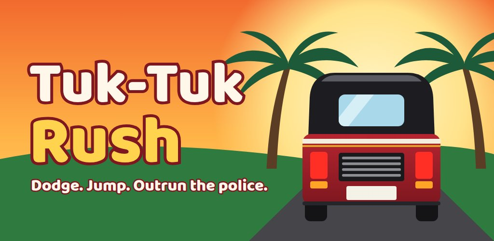
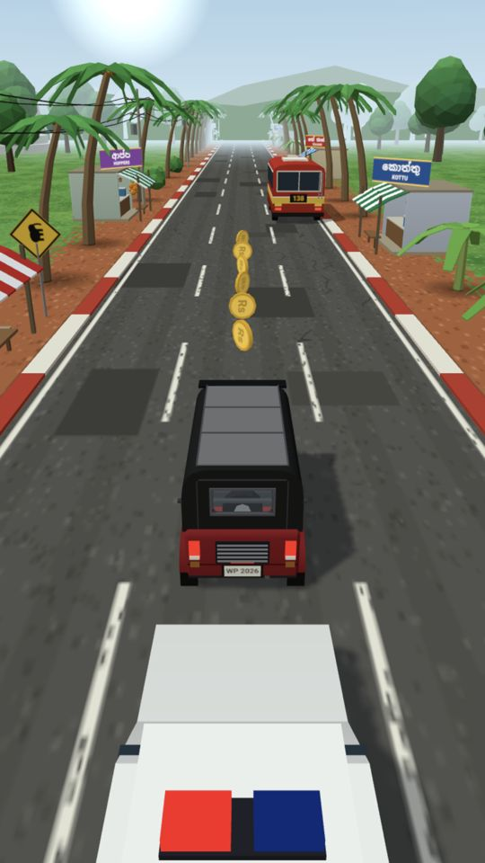
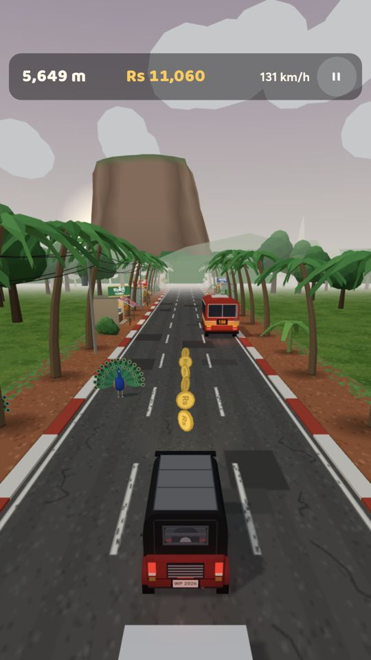
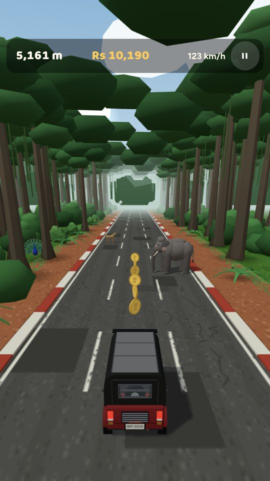
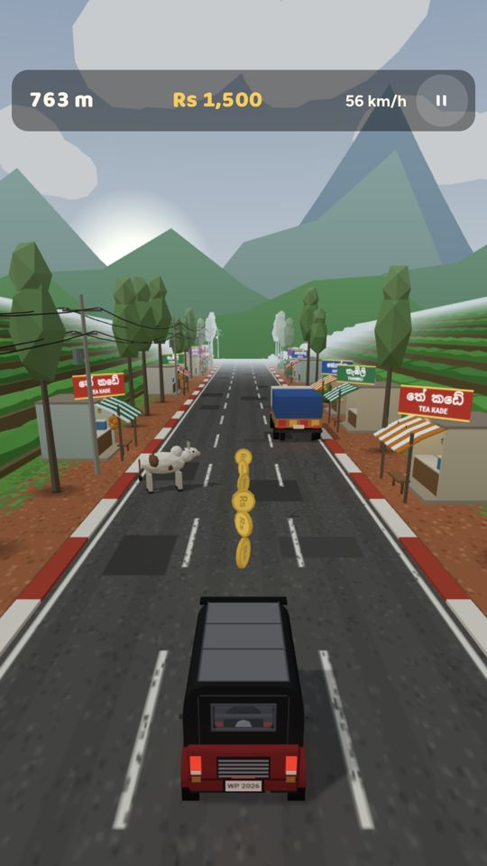
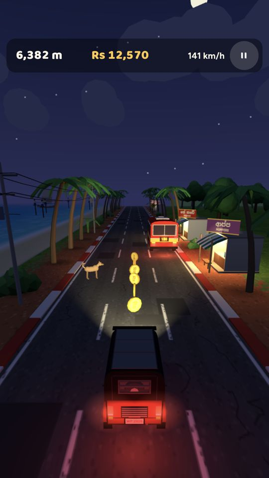
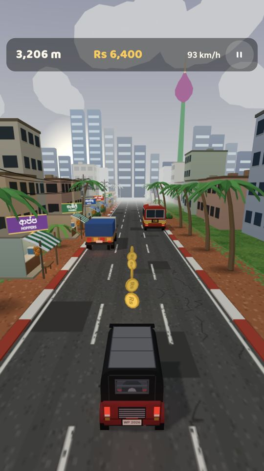
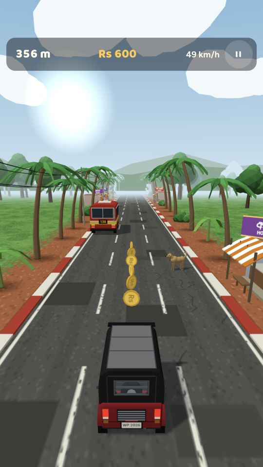
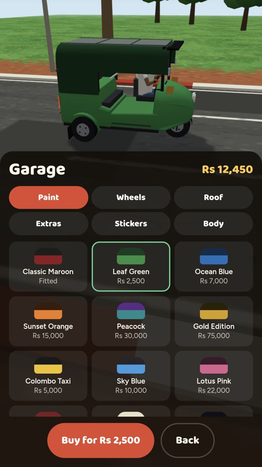

Screenshots








What's in the game
Police chase
The police start right behind you and come back whenever you slip up, while the speed climbs past 140 km/h.
The real island
Village roads, tea country, the Sinharaja rainforest, Sigiriya rock, the southern coast and busy Colombo.
Weather and time
Sunshine, cloud and monsoon rain, from day into night.
Easy controls
Tap to change lanes, swipe up to jump. Daily challenges and missions that keep growing.
Make it yours
Paint jobs, wheels, roof racks, body kits and Sinhala stickers, all earned by playing.
Tuk-tuk radio
13 songs on the radio. Plays offline. Optional rewarded ads, never during a run.